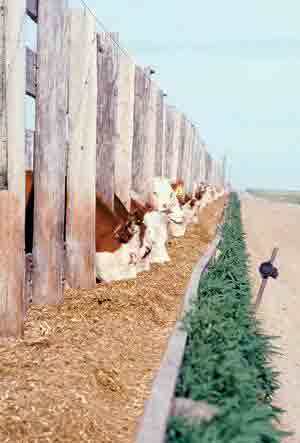

Groundwater contaminated by cattle and used to irrigate spinach crops in California is under suspicion in the investigation of the current E. coli outbreak that has infected more than 100 people, killing one. This particular strain of E. coli, O157:H7, is found in the intestinal tracts of cattle raised on a grain diet, according to a recent New York Times op-ed piece.
U.S. researchers have found that high-grain diets make E. coli more potent. When cattle are fattened on grain, their digestive tracts become unusually acidic and kill off most of the E. coli. But the bacteria that survive are those that have adapted themselves to an acidic environment. This is a major problem for human health because our first line of defense is the acidity of our own digestive juices. Acid-resistant feedlot bacteria can survive our gastric juices in sufficient number to make us ill.
By contrast, the E. coli from grass-fed cattle remains sensitive to acid and is quickly destroyed in our stomachs. 'Switching cattle from grass to grain to speed their growth has created a lot of unforeseen problems,' says Jo Robinson, grass-fed expert and author of the book Pasture Perfect.
For instance, Bovine Spongiform Encephalopathy (BSE, or more commonly, mad cow disease), has not been found in grass-fed animals. Mad cow is thought to be caused by feeding cattle pieces of brain and nerve tissue from other infected animals. (This practice was abolished in the United States in 1997.) When humans consume meat from animals with mad cow disease, they risk contracting its human form ? Creutzfeldt-Jakob Disease. Mad cow disease has not been found among grass-fed animals because they exclusively eat forage materials.
For more on grass-fed beef, read Better Beef. And you can learn more about factory farming by watching The Meatrix, an award-winning online video.
|
 BRIAN PRECHTEL/COURTESY USDA ARS Contaminated ground water from industrial cattle farms may be responsible for the recent E. coli outbreak caused by tainted spinach. |
|
|